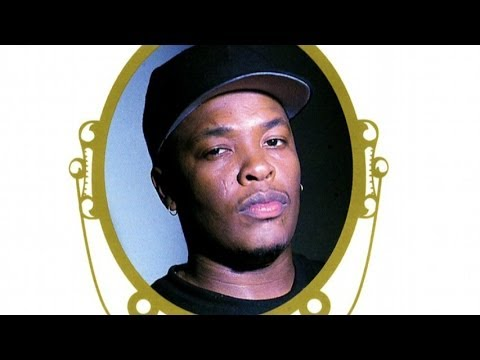
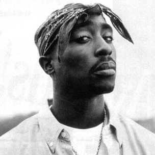
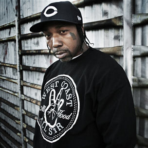

Old school west coast hip-hop was arguably the most popular type of hip-hop in the early 90's. The most notable style in this era of west coast hip-hop is G-Funk. G-Funk incorporated synths, slow grooves, and many funk samples. This new style gave west coast its own unique sound. Below are some artists that fit into the old school west coast hip-hop genre.
Dr. Dre

Andre Young AKA Dr. Dre is a rapper and producer from Compton, California. He is most known for being a member of N.W.A. and pioneering west coast hip-hop. He kickstarted the careers of several famous rappers such as Snoop Dogg and Kendrick Lamar. Dre was also responsible for popularizing the hip-hop style of G-Funk. He is one of the few rappers who has transcended hip-hop and become a pop culture icon.
2Pac

Tupac "2Pac" Shakur is a rapper from Los Angeles, California. He became a large figure in the mid to early 90's. His album "All Eyez on Me" is one of the best selling albums of all time. 2Pac was most known for being involved in the east-coast, west-coast hip-hop rivalry during the mid 90's which eventually led to him being shot and killed in 1996. He is consistently regarded as one of the greatest rappers of all time.
MC Eiht

Aaron Tyler AKA MC Eiht was an American rapper from Compton, California. He is most known for being a part of the hip-hop group "Compton's Most Wanted." He later started his solo career and appeared in several films and video games. A lot of his music has been featured in the Grand Theft Auto series. Many current rappers list him as a major influence.